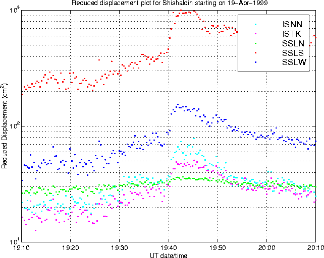
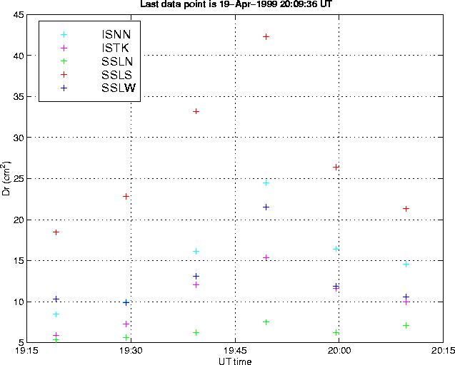

Reduced Displacement plot which better shows the onset of the eruption on April 19th. The main pulse begins at 1938 or 1939 UT. Satellite imagery shows a smaller eruption began prior to 1930 UT, possibly corresponding to an inflexion observed at ~1925 UT on this Dr plot. This Dr data is calculated using the signal, whereas the standard method is to calculate the maximum reduced displacement in a 0.1 Hz bin - this explains why the amplitudes are so large on this graph. A time resolution of 20s is used, as opposed to 10-minutes on the standard plots.
.
.
Glenn Thompson, 12 May 1999.